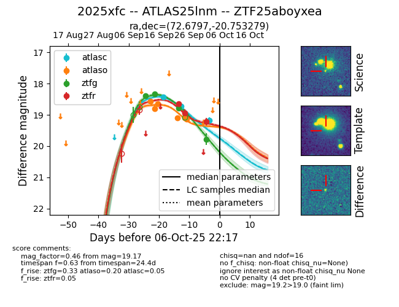
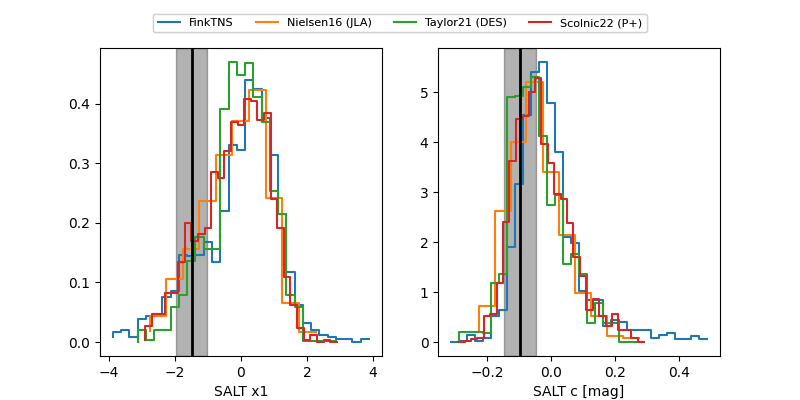

FINK: ZTF25aboyxea
Lasair: ZTF25aboyxea
ALeRCE: ZTF25aboyxea
TNS: 2025xfc
YSE: 2025xfc
ZTF25aboyxea (ztf,fink)
2025xfc (tns,yse)
ATLAS25lnm (atlas)
equatorial (ra, dec) = (72.6797,-20.75328)
galactic (l, b) = (220.0542,-35.44737)


last atlasc=19.17, atlaso=19.14, ztfg=19.78, ztfr=19.22
3 atlasc, 6 atlaso, 4 ztfg, 3 ztfr detections